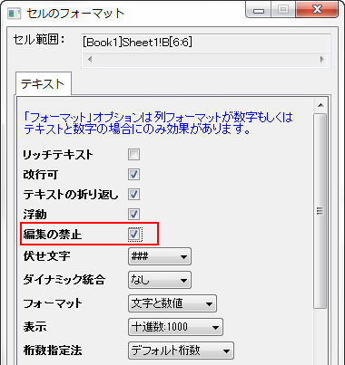

FAQ-273 分析テンプレートの現在のデータを保持するには？
最終更新日:2015/02/04
デフォルトでは、分析テンプレートとして保存する際にすべてのワークシートデータが削除されます。テンプレート内のいくつかのデータを保持したい場合、
- 残したいデータのセルを選択します。
- 右クリックして、セルのフォーマットを選択します。
- セルのフォーマットダイアログが開くので、編集の禁止のチェックを付けます。
- 
- ファイル：ワークシートを分析テンプレートとして保存を選択し、今後の利用のためにテンプレートを保存します。
キーワード: 分析テンプレート, セルのフォーマット, データフォーマット, 編集禁止
必要なOriginのバージョン:2015SR0